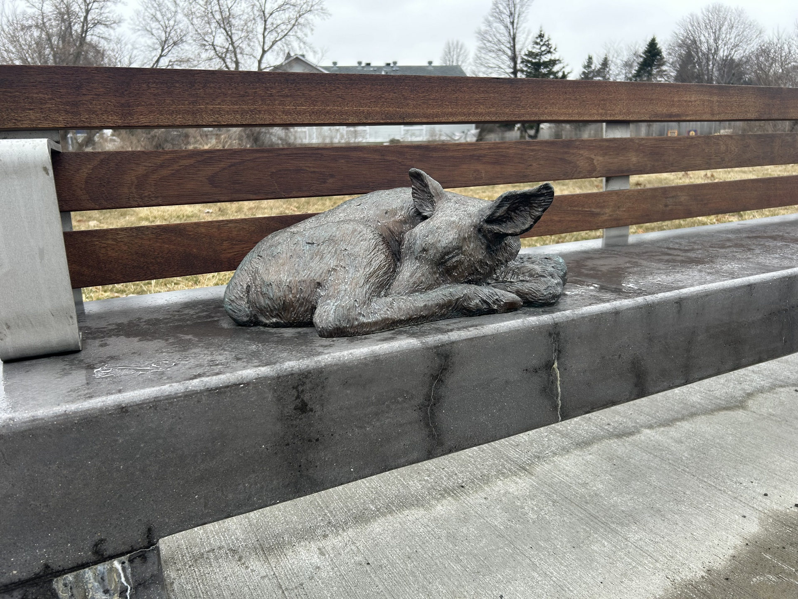
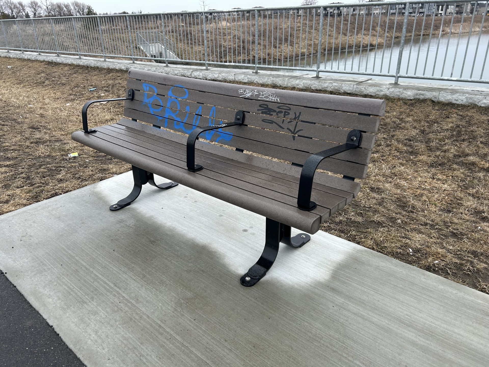

Integrating A State of Rest into the unsuspecting suburbs makes the sculptures part of the community’s subconscious topography. People pause beside the animals, take photos, sit on the benches, or simply notice them in passing. Even animals engage with the work—dogs have been seen reacting to the fox sculpture with curiosity, suggesting the sculptures’ realism resonates beyond human perception. These fleeting moments of interaction affirm the artwork’s ability to quietly disrupt, even within the flow of daily life.
Public reception

Fawn Bench (Note the lack of graffiti)

Graffitied bench located across the street from the main cluster of A State of Rest
Everyday Encounters
Residents have responded warmly to the installation, noting that the benches bring a sense of character and uniqueness to the area. In contrast to nearby street furniture—many of which are marred by graffiti—the benches that form part of A State of Rest remain clean and respected. This distinction may speak to the care and emotional resonance the sculptures invite.
Yet this embrace is not uniform. Many locals are unaware of the fourth sculpture, the raccoon, whose remote placement across a busy road means it often goes unnoticed. The artwork occupies a unique middle ground between interaction and reflection. But its quietness is not silence. It gently prompts viewers to engage with deeper questions about shared space, belonging, and the shifting thresholds between nature and human design.
Memorials in plain sight?
There is another layer of symbolism embedded in the work: the bench as a memorial. Traditionally, benches in public spaces are often inscribed with dedications—commemorations of lives lived, moments remembered, or losses mourned. In A State of Rest, no such inscriptions exist. And yet, the presence of these animals (carefully rendered, life-sized, and unmoving), evokes a similar tone of remembrance.
Are these benches, in effect, memorials to the wildlife displaced by development? The animals rest in silence, as if marking the space they once occupied but have now lost. Their stillness might represent peace, or perhaps absence—a subtle but powerful commentary on what urban expansion has overwritten. In this reading, A State of Rest does not just coexist with its environment; it commemorates what has been sacrificed to build it.
"Man with Dog" in memory of local Veteran John Waterfall, Sydney Australia
Jim Henson and Kermit the Frog memorial bench at the University of Maryland
John Lennon memorial bench in Havana
A Place at the Cathedral for Homeless Jesus, Christ Church Cathedral Ottawa
Community responses to A State of Rest reveal the strength of public art not in offering answers, but in opening space for layered interpretations. For some, the sculptures symbolize peaceful coexistence between humans and wildlife. For others, they evoke quiet grief; a recognition that these animals, however present in bronze, have been displaced in reality.
Whether seen as decorative, commemorative, or critical, the work succeeds in drawing the public into its questions. It asks us not only to reflect on the animals at rest, but on what kind of rest we make room for, and for whom.